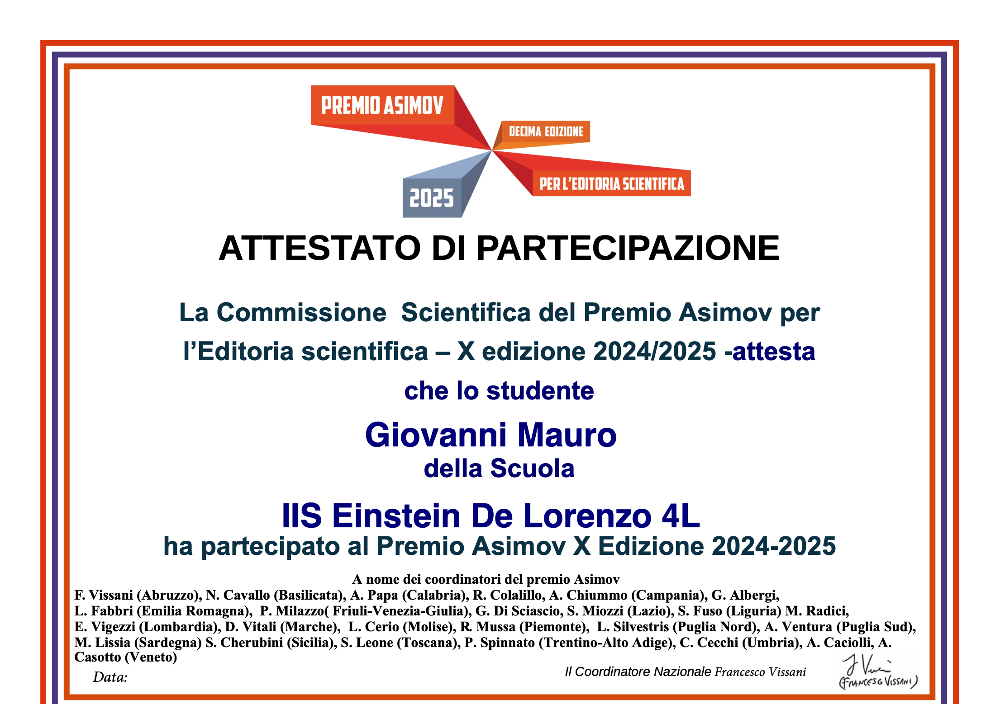
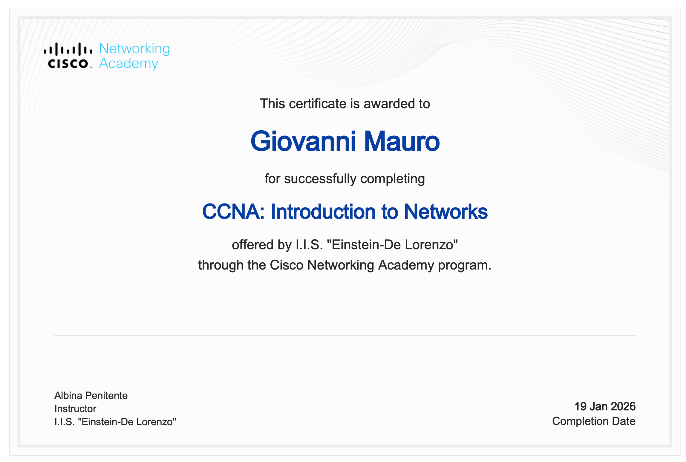
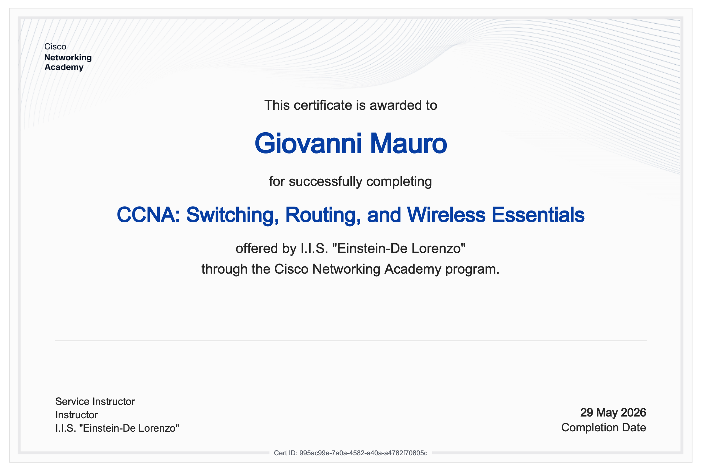
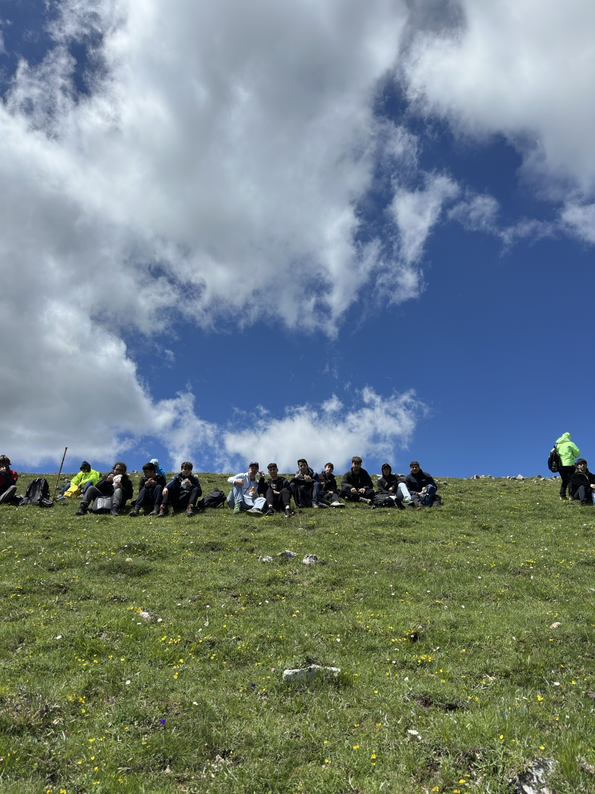

Premio Asimov
Area per raccogliere recensioni, attestati e documenti collegati alla divulgazione scientifica.
Certificazioni IT-Essential
Certificazione corso su componenti di un calclatore, manutenzione e sistemi operativi.

Certificazioni CCNA1
Certificazione corso su indirizzamento, dispositivi, protocolli e funzionamento delle reti.

Certificazioni CCNA2
Certificazione corso su reti locali e wireless, instradamento, configurazione e commuttazione.
Sicurezza INAIL
Raccolta dei materiali legati alla formazione obbligatoria sulla sicurezza nei luoghi di lavoro.

Vivere la montagna
Materiali e immagini del percorso con il CAI, tra orientamento, ambiente e strumenti digitali.